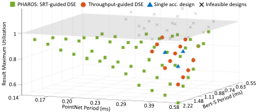
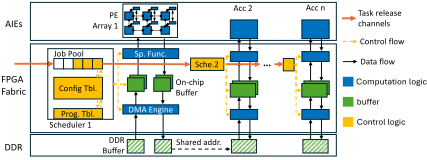
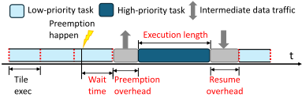
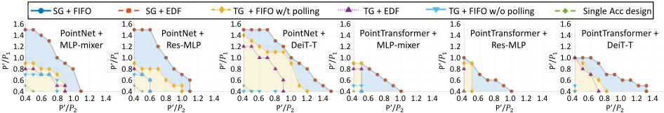
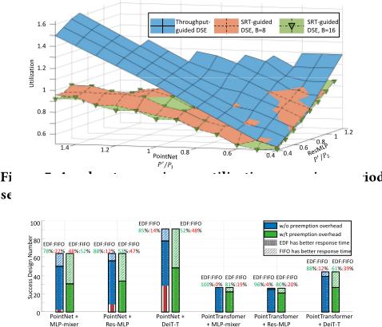

PHAROS: Pipelined Heterogeneous Accelerators for Real-Time Safety-Critical Systems With Deadline Compliance
PHAROS：面向实时安全关键系统且满足截止期合规的流水线异构加速器
简介
现有空间分区异构加速器（HA）设计框架多以吞吐率或 QoS 为目标，缺乏安全关键实时系统所需的可预测执行硬件支持、实时感知的设计空间探索（DSE）与严格可调度性分析。PHAROS 提出面向软实时（SRT）可调度性的流水线 HA 框架：在加速器内实现层内抢占机制与 FIFO/EDF 调度器，将抢占开销并入 WCET 建模，并依据实时理论以各加速器利用率≤1 作为 SRT 可调度判据，以最大利用率为优化目标，用 beam search 高效探索资源划分、层映射与 PE 阵列参数。原型基于 CHARM 性能模型与代码生成器，部署于 Versal VCK5000。结果显示 PHAROS 较吞吐率导向 DSE 多找到 1.44×–2.28× 可行解、最大利用率最多降 6.2%，beam search 较暴力搜索快 13.3×–117.2× 而最优性仅差 2.3%。该工作属 DNN 加速器实时调度范畴，与团队内存/互连 IP 业务无直接交集，仅其以系统级保证作为 DSE 目标的思想具一般参考价值。
问题
现有异构加速器设计框架主要优化吞吐率或 QoS 指标（如 99% 延迟），缺乏安全关键实时系统所需的可预测硬件行为、实时感知的 DSE 与严格可调度性分析；部分 QoS 框架（如 DREAM、CDMSA）通过丢弃任务换取指标，直接违反 SRT 系统每个任务响应时间必须有界的要求；而已有实时加速器框架（MESC、ART、DERCA 等）受限于单加速器架构、硬件定制不足，无法在更小周期（更重负载）下保证截止期合规。
方法
PHAROS 采用流水线拓扑的多加速器架构：任务各层连续映射到各加速器、不允许回溯；每个加速器为 output-stationary 数据流加 tiling 加双缓冲，通过专用 DMA 引擎发 AXI 事务访问片外 DDR；片上调度器含静态配置表、进度表与 job pool，支持 FIFO 与 EDF 调度及层内抢占（以 tile 为粒度保存/恢复上下文），抢占开销被并入 WCET 建模。基于实时理论 [5]，以每个加速器利用率≤1 作为 SRT 可调度的充要条件，DSE 以各加速器最大利用率为目标，提出 beam search 启发式（引入 remain_acc 合成加速器评估未分配负载并剪枝）探索资源划分、层映射与 A/B/C/X/Y/Z 参数空间，并在 Versal VCK5000 上结合 CHARM 性能模型与代码生成器完成原型实现。
关键结果
PointNet 与 Bert-B 组合示例中：固定加速器设计仅 3 个 taskset SRT 可调度，吞吐率导向 DSE 达 13 个，PHAROS 达 49 个，较吞吐率导向 DSE 提升 3.76×
跨多种应用/周期组合，SRT 导向设计比最优基线（TG+FIFO w/t polling）多找到 2.28×、2.28×、1.44×、2.25×、2.17×、2.10× 个可行解
平均利用率较吞吐率导向 DSE 改善 3.7%、4.6%、-2.4%、6.2%、3.9%、5.1%；PointNet+DeiT-T 组在 beam 宽度 B 增至 16/32 后由 -2.4% 变为 +0.07%/+3.5%
SG+EDF 中抢占发生频率比 TG+EDF 低 10×（仿真统计）
B=8 beam search 对比暴力搜索：暴力搜索找到同等首个可行解需 >500 秒（13.3×），完成全部搜索需 >5000 秒（117.2×），最优 max(util) 仅好 2.3%
调度器开销小：每个表项 <25 字节，数组排序时间 <1 µs
响应时间分析：考虑抢占开销后 EDF 占优的 taskset 比例下降，但 Point Transformer 相关组中 EDF 仍在 81%、80%、61% 的设计上更优
五个截断负载在单加速器上的延迟参考：PointNet 0.23 ms、Point Transformer 0.99 ms、MLP-Mixer 0.30 ms、Res-MLP 0.38 ms、DeiT-T 0.14 ms
创新点
相对已有工作的区别：(1) 现有 HA 框架面向吞吐率/QoS，或通过丢任务（DREAM、CDMSA）优化指标，无法数学上保证每个任务响应时间有界；(2) 已有实时加速器框架（MESC、ART、DERCA）限于单加速器，硬件定制受限；(3) PHAROS 将流水线拓扑约束下的 SRT 可调度性理论（利用率≤1 判据）与多加速器 DSE 结合，以 max utilization 替代吞吐率作为优化目标，并提供带抢占开销建模的 FIFO/EDF 硬件调度支持与响应时间分析，同时以 beam search 控制搜索复杂度。
团队参考意义
相关度级别：low
命中能力域：无明显对应
理由：论文核心是面向安全关键实时系统的 DNN 异构加速器架构与调度框架（层内抢占硬件、FIFO/EDF 调度、SRT 可调度性驱动的 DSE），其验证手段为解析式实时理论、周期级仿真与 FPGA 部署评估，而非 UVM/形式验证/仿真加速等团队技术栈；论文不涉及内存/互连 IP 的架构、RTL 实现或验证交付。其在 Versal VCK5000 上的 FPGA 使用是最终系统部署与评估平台，并非团队 2.6 域所指的验证用 FPGA 原型/Emulation；其 DSE 自动化属设计侧探索，也不对应 2.7 的验证自动化。故判定为 low，与上游 catalog 标签一致。
建议动作：仅了解结论
中文全文
arXiv:2604.05308v1 [cs.AR] 2026年4月7日
PHAROS: Pipelined Heterogeneous Accelerators for Real-time Safety-critical Systems With Deadline Compliance
Shixin Ji
布朗大学，美国普罗维登斯 shixin_ji@brown.edu
Zhuoping Yang
布朗大学，美国普罗维登斯 zhuoping_yang@brown.edu
Alex K. Jones
雪城大学，美国雪城 akj@syr.edu
Abstract
空间分区的异构加速器（HA）因其性能和灵活性而在嵌入式系统中得到日益广泛的应用。然而，现有的大多数HA设计框架主要针对吞吐量或服务质量（QoS）指标进行优化，往往忽视安全关键的实时需求，包括对可预测执行的硬件支持、实时感知的设计空间探索（DSE）以及严格的可调度性分析。这些需求在智能交通等安全关键应用中至关重要，因为可调度性保证直接影响系统安全。为填补这一空白，我们提出了PHAROS，一个以实时为中心的HA设计框架。PHAROS为空间分区的HA引入了在先进先出（FIFO）和最早截止时间优先（EDF）策略下的抢占机制与调度器设计。借助现代实时理论，我们进一步开发了面向软实时（SRT）可调度性的DSE，其目标和约束专为SRT可调度性而定制。通过在多种应用上进行全面的建模、分析与评估，我们表明，与面向吞吐量的DSE基线相比，PHAROS面向可调度性的DSE能够为更广泛的任务集发现更多可行配置，同时提供更优的实时性能。我们还为所支持的调度算法提供了响应时间分析。
1 Introduction
异构加速器（HAs）由于能够针对不同工作负载在空间上划分计算资源，从而实现更高的性能和更好的能效，在嵌入式系统中日益流行 [1-4]。然而，现有的大多数 HA 设计专注于吞吐量或服务质量（QoS）指标，忽视了实时安全关键系统的需求，这类系统要求可预测的硬件行为、具备实时感知的设计空间探索（DSE）以及严格的可调度性分析。错过截止时间可能直接违反系统级安全保证（硬实时，HRT），或造成严重退化（软实时，SRT）。
因此，设计面向实时的 HA 会引入一个与面向吞吐量方法根本不同的设计空间。首要需求是可调度性。在 SRT
本文已被 DAC 2026 录用
Jinming Zhuang
布朗大学，普罗维登斯，美国 jinming_zhuang@brown.edu
Xingzhen Chen
布朗大学，普罗维登斯，美国 xingzhen_chen@brown.edu
Yihui Ren
布鲁克海文国家实验室
阿普顿，美国 yren@bnl.gov Sarah Schultz 布朗大学，普罗维登斯，美国 sarah_schultz2@brown.edu
Zheng Dong
韦恩州立大学，底特律，美国 dong@wayne.edu
Peipei Zhou
布朗大学，普罗维登斯，美国
peipei_zhou@brown.edu

本文所考虑的设置中，每个作业必须在有限的响应时间内完成。传统性能指标作为优化目标是不充分的，因为它们既不能量化可调度性，也无法区分可行的软实时（SRT）设计。此外，动态调度和抢占机制需要硬件支持，其时序行为必须被建模和分析。因此，现有框架难以满足面向 SRT 的设计空间探索（DSE）的需求。
图 1 说明了这一挑战：我们通过为 PointNet 与 Bert-B 模块的相同应用组合分配不同的任务周期来构成不同的任务集，然后使用不同的 DSE 方法创建异构加速器（HA）系统，并测量其 SRT 可调度性。周期越小意味着工作负载越重。图中的每个点代表一个生成的 HA 系统。我们报告每个 HA 系统内所有加速器中的最大利用率（执行时间/周期）。当该最大利用率 > 1 时，系统不可能实现 SRT 可调度。在此示例中，在固定的加速器设计下仅有三个任务集是 SRT 可调度的。吞吐量引导的 DSE 可以通过定制硬件使 13 个任务集可调度，但仍然遗漏了大多数可行配置。
为弥补这一空白，我们提出了 PHAROS，一种专为 SRT 可调度性量身定制的流水线式 HA 架构。在最先进的实时理论 [5] 的指导下，PHAROS 强制每个加速器的利用率保持在 1 以下，并采用流水线执行模型，其中任务必须在一个加速器上完成所有段之后才能转移到下一个加速器。基于这些约束，我们构建了面向 SRT 的 DSE 问题，选择最大利用率作为优化目标，因为它既反映硬件效率，又与 SRT 可调度性相一致。我们进一步引入束搜索（beam search）启发式方法来高效地探索这一独特的设计空间。
作为该 DSE 的基础支持，我们实现了用于抢占和动态调度（FIFO 和 EDF）的硬件机制。系统在完全可抢占的上下文中进行建模，并考虑硬件延迟和抢占开销，以确保安全、准确的时序分析。如图 1 所示，PHAROS 为 49 个任务集发现了可行设计，相比吞吐量引导的 DSE 实现了 3.76 倍的提升。我们在多样化的真实世界工作负载上对 PHAROS 进行评估。PHAROS 找到的可行解决方案数量达到 1.44 倍至 2.28 倍，并将可行解决方案中的最大利用率降低了高达 6.2%。我们还分析了不同调度策略下的响应时间，并讨论了它们之间的权衡。总之，我们的贡献如下：
2 Related Works
面向实时安全关键系统的硬件加速器：已有多种工作在不同平台上探索了硬件加速器（HA）的设计 [1, 3, 6-13]。然而，现有框架的加速器设计仍主要面向吞吐量或延迟，并且通常依赖缺乏抢占能力的静态或 FIFO 调度策略。因此，它们无法直接部署到软实时（SRT）安全关键系统中，因为在这类系统中，异构工作负载必须根据不同的重要性级别（即任务优先级）进行调度。
还有一些框架实现了抢占或截止期感知调度等与实时系统相关的特性 [4, 14-20]。这些框架主要针对 99% 延迟等服务质量（QoS）指标进行优化，这允许某些作业不产生响应。与这些指标不同，SRT 截止期合规要求每个作业都具有有限的响应时间。因此，这些框架同样无法部署到 SRT 安全关键系统上。DREAM [14] 和 CDMSA [16] 选择丢弃作业来为其他作业腾出空间。尽管这可以改善 QoS 指标，但这直接违反了 SRT 要求。此外，这些框架并未从数学上检验系统能否确保截止期合规。
针对实时系统，一些框架被提出以满足截止期合规要求，并提供可调度性或响应时间分析。[21] 基于 Vitis-AI [22] 框架实现了一个非抢占式的基于深度神经网络（DNN）的驾驶辅助系统。MESC [23]、ART [24, 25] 和 DERCA [26] 实现了抢占机制和最早截止期优先（EDF）调度。这些工作专为实时安全关键系统而设计；然而，它们的性能受限于单加速器架构，因而硬件定制能力有限。因此，PHAROS 能够为周期更小的任务集确保 Shixin Ji、Jinming Zhuang、Sarah Schultz、Zhuoping Yang、Xingzhen Chen、Zheng Dong、Alex K. Jones、Yihui Ren 和 Peipei Zhou 截止期合规，而这些框架则因硬件效率低下而无法做到。

用于指导加速器设计的实时理论：为确保满足截止时间，加速器设计必须与实时理论相结合，以分析可调度性或响应时间。对于单个加速器，[27] 在硬实时（HRT）场景下给出了最早的形式化表述，其中每个作业都要求在其截止时间之前完成。[28] 分析了软实时（SRT）场景，其中作业仅要求具有有限的响应时间。对于多异构加速器系统，[29] 和 [30] 分别在 HRT 和 SRT 场景下提供了分析，且未对系统施加任何约束。然而，由于考虑了许多极端情况，这两项工作过于悲观，使得通过可调度性测试的候选设计在硬件上效率低下。[5] 通过约束加速器的拓扑结构，为 SRT 调度给出了更紧的界，即一个作业必须在一个加速器上完成其全部执行后才能前往另一个加速器，且不允许回溯。
我们选择利用 [5] 来指导 PHAROS。我们将硬件抢占操作合并到最坏情况执行时间（WCET）中，以在全抢占场景下对系统进行建模，并针对这些约束设计我们的 DSE。我们承认这一现有理论限制了设计空间；尽管如此，它仍能覆盖空间加速器设计的很大一部分。我们将对更先进的实时理论和拓扑结构的探索留作未来工作。
3 PHAROS Hardware Architecture Design and Task Modeling
在本节中，我们介绍所提出的 PHAROS 硬件架构，包括数据流和控制流。随后，我们在全抢占（fully-preemptive）场景下对整个系统进行形式化描述，并解释我们在抢占与任务模型方面的方法。
3.1 PHAROS Accelerator Design
PHAROS 采用了一种广泛使用的加速器模型，如图 2 所示，该模型由多个独立的数据流加速器组成。在每个加速器中，每个深度神经网络（DNN）层的执行都从片外双倍数据速率（DDR）存储器加载数据开始，并以将结果存储到 DDR 结束。我们为每个加速器采用带分块（tiling）的输出固定（output-stationary）数据流，以减少片外存储器访问。我们对输入与输出片上缓冲器集合应用双缓冲（double buffering）技术，使加载和存储操作与计算过程重叠进行。
为了在单个加速器中处理具有各种形状的层，我们将每一层的配置存储在相应的片上调度器中，包括形状（例如矩阵乘法中的 M、K、N）以及 DDR 基地址。DDR 存储器空间的划分在编译之前确定。我们为不同的张量分配独立的存储器空间，以避免冲突。对于由连续层产生并消费的中间数据，我们自动维护一个统一的缓冲区空间，以避免重复占用存储器。我们设计了专用的直接存储器访问（DMA）引擎，用于向片外 DDR 存储器发出 AXI 事务，从而实现交错访问，使多个加速器能够共享可用带宽。
PHAROS：面向具有截止期限符合性的实时安全关键系统的流水线异构加速器
3.2 Control Flow and Scheduling Methods
为确保正确且高效的执行，调度机制对于确定每一层在每个加速器上的执行顺序以及跨加速器同步数据至关重要。在 PHAROS 中，我们采用去中心化的控制流，由每个加速器独立进行调度。如图 2 所示，每个片上调度器拥有一个静态配置表、一个用于存储执行状态的动态进度表，以及一个用于存储可被调度的就绪作业的作业池。当采用先进先出（FIFO）调度时，作业池以队列的形式实现。当采用最早截止期限优先（EDF）调度时，作业池以数组的形式实现，并在调度前按截止期限排序。如果新作业的截止期限早于正在执行的作业，则会发生抢占。
调度器表的最大容量在编译时固定。我们将进度表和作业池的最大条目数设置为任务集中任务的数量，因为当系统是软实时（SRT）可调度的且加速器处于链式拓扑时，每个任务在加速器上至多存在一个就绪作业。调度器的时间和资源开销很小，每个条目占用 < 25 字节的数据，数组的排序时间 < 1 µs。
PHAROS 通过由高层次综合（HLS）流实现的 FIFO 队列将不同加速器之间的作业池连接起来。对于第一个加速器，作业由外部设备释放，例如连接到传感器的 CPU 或输入/输出（IO）。每个加速器在完成该作业上的段之后，会向其后继加速器释放一个作业。这意味着对于一个作业，其在某个加速器上的段只有在以下情况下才会就绪：（1）该加速器是第一个加速器，或（2）所有前驱加速器均已完成执行，这与准则理论 [5] 相兼容。
3.3 Task and Performance Modeling
遵循 [5] 中的设置，我们首先在完全抢占式调度模型下对 PHAROS 系统进行形式化表述，然后讨论硬件级抢占延迟如何影响其行为。系统执行一个任务集 𝜏，其中每个任务 𝜏 𝑖 由元组 ( 𝑒 𝑖 , 𝑝 𝑖 , 𝑑 𝑖 ) 表征。这里，𝑒 𝑖 表示最坏情况执行时间（WCET），𝑝 𝑖 是周期性任务的释放周期（或偶发性任务的最小到达间隔时间），𝑑 𝑖 是截止期限。在本文中，我们假设采用隐式截止期限模型，即 𝑑 𝑖 = 𝑝 𝑖 。软实时（SRT）可调度的实时任务系统允许错过截止期限，但要求每个任务的响应时间保持有界。在运行时，每个任务 𝜏 𝑖 生成一系列具有相同推理形状的作业，记为 𝜏 𝑖,𝑗 。
为了执行该任务集，我们将系统建模为一条由 𝑀 个加速器组成的流水线，记为 𝑎𝑐𝑐 1 , . . . , 𝑎𝑐𝑐 𝑀 。每个任务 𝜏 𝑖 相应地被分解为至多 𝑀 个段，其中 𝜏 𝑘 𝑖 表示任务 𝑖 在加速器 𝑎𝑐𝑐 𝑘 上执行的段，𝑒 𝑘 𝑖 是其 WCET。我们假设每个任务是（或可以被拓扑排序为）一个深度神经网络（DNN）层的序列。我们将在第 5.5 节中讨论该假设的局限性。我们将任务 𝑖 的第 𝑗 层记为 𝑙 𝑖,𝑗 ，并将任务 𝑖 中的层总数记为 𝐿 𝑖 。各层可以以多种方式映射到加速器上，但须满足以下流水线拓扑约束：层 𝑙 𝑖,𝑗 可以被映射到加速器 𝑎𝑐𝑐 𝑘 ，当且仅当满足以下条件之一：(1) 𝑗 = 1；或 (2) 所有满足 𝑚 < 𝑗 的前驱层 𝑙 𝑖,𝑚 均被映射到满足 𝑛 ≤ 𝑘 的加速器 𝑎𝑐𝑐 𝑛 上。我们也允许 DAC '26, July 26-29, 2026, Long Beach, CA, USA

某个加速器不承载某个任务的任何层，在这种情况下，该任务直接绕过相应的加速器。
每个加速器由若干关键设计参数表征。遵循 CHARM [3]，我们将 𝑎𝑐𝑐 𝑘 建模为大小为 𝐴 𝑘 × 𝐵 𝑘 × 𝐶 𝑘 的三维处理单元（PE）阵列，该阵列沿矩阵乘法的 𝑀 、 𝐾 和 𝑁 维度运行。相应的片上分块（tile）大小为 𝑋 𝑘 × 𝑌 𝑘 × 𝑍 𝑘 。由此可以推导出 𝑎𝑐𝑐 𝑘 所消耗的关键硬件资源，包括处理单元（PE）/AI 引擎（AIE）的数量、AIE 阵列与现场可编程门阵列（FPGA）结构之间的片上带宽、片上存储器使用量以及片外 DDR 带宽。
我们将层 𝑙 𝑖,𝑗 在加速器 𝑎𝑐𝑐 𝑘 上的执行延迟记为 𝑏𝑙 𝑖,𝑗 ，其可表示为：
为确保 SRT 可调度性，我们对每个加速器分别进行分析。对于 𝑎𝑐𝑐 𝑘 ，我们将其利用率 𝑢 𝑘 定义为所有任务在该加速器上的处理时间占比之和：
基于 [5]，当且仅当每个加速器的利用率均不超过 1 时，系统是 SRT 可调度的，该条件在先进先出（FIFO）和最早截止期限优先（EDF）调度下均成立：
3.4 Preemption Support & Overhead
原始的实时理论假设了一个零开销的完全可抢占场景，但由于抢占会引入延迟，这一假设并不符合实际。下面我们阐述 PHAROS 中的抢占机制及相应的建模方法。
如图 3 所示，PHAROS 利用基于分块（tile）的输出固定（output-stationary）数据流，支持在单层的执行过程中进行抢占。当一个高优先级作业到达调度器时，加速器无法立即运行它。相反，加速器会先完成低优先级作业的当前分块。然后，它将输出缓冲区中的部分结果存储到相应的 DDR 地址。当前以循环迭代次数表示的执行状态会被记录到调度器内的片上进度表中。随后，加速器运行高优先级作业。当低优先级作业恢复时，调度器根据循环迭代情况重新加载输入和输出缓冲区，并恢复执行。
在一个加速器上，一个作业可能被其他作业多次抢占，但它一旦被释放，只能抢占其他作业一次。因此，最坏情况执行时间（WCET）被建模为两部分：
其中 𝑏 𝑘 𝑖 和 𝜉 𝑘 𝑖 分别表示执行时长和开销。为了量化 𝜉 𝑘 𝑖 ，我们假设抢占过程中的每个环节都取最大值。也就是说，高优先级任务需要等待一个完整的分块，然后才开始存储数据。计算一个分块、存储以及加载缓冲区的延迟 DAC '26, July 26-29, 2026, Long Beach, CA, USA
Shixin Ji, Jinming Zhuang, Sarah Schultz, Zhuoping Yang, Xingzhen Chen,

在一个加速器内是固定的，仅与其设计参数有关：
(5)
其中 𝑒 𝑘 𝑡𝑖𝑙𝑒 、𝑒 𝑘 𝑠𝑡𝑜𝑟𝑒 和 𝑒 𝑘 𝑙𝑜𝑎𝑑 是 𝐴 𝑘 , ..., 𝑍 𝑘 的函数。具体而言，当该加速器被跳过时（ 𝑏 𝑘 𝑖 = 0）， 𝑒 𝑘 𝑖 也为 0。抢占仅在采用 EDF 调度时才会发生。对于 FIFO 调度，则不会发生抢占或开销。
4 PHAROS Design Space Exploration
在本节中，我们展示设计空间的关键设计参数、目标和约束条件。随后，我们提出用于缩短搜索时间的启发式方法，并进行复杂度分析。
4.1 PHAROS Design Space
图4展示了PHAROS的设计空间。其主要目标是找到一个设计点，对平台资源进行划分以创建多个加速器，并将任务集映射到这些加速器上，使得整个系统是软实时（SRT）可调度的。我们分三个阶段探索整个设计空间。我们的设计空间探索（DSE）以一个任务集作为输入，该任务集具有预先确定的层形状 𝑙 𝑖,𝑗 和周期 𝑝 𝑖 ，以及平台可用资源 𝑅 = ( 𝑅 1 , 𝑅 2 , 𝑅 3 , 𝑅 4 )，分别对应AIE、片上存储器容量、片上带宽和DDR带宽。加速器总数 𝑀 在DSE期间被设置为超参数。第一步是将片上资源划分给各个加速器。我们将 𝑟 𝑖 = ( 𝑟 𝑖 1 , ...𝑟 𝑖 4 ) 表示为分配给每个加速器的资源，其约束条件为 𝑘 𝑟 𝑘 𝑖 = 𝑅 𝑖 且 𝑟 𝑘 𝑖 > 0。接下来，我们确定每个任务的层到加速器的映射。在流水线拓扑假设下，我们提出的层分配策略将连续的层映射到一个加速器。因此，我们将 𝜏 𝑖 的映射表示为 𝑚 1 𝑖 , 𝑚 2 𝑖 , ..., 𝑚 𝑀 𝑖 ，其中 𝑚 𝑘 𝑖 表示运行在 𝑎𝑐𝑐 𝑘 上的层数；由于映射是连续的，第 𝑘 - 1 𝑗 𝑚 𝑗 𝑖 层至第 𝑘 𝑗 𝑚 𝑗 𝑖 层被映射。通过强制约束 𝑘 𝑚 𝑘 𝑖 = 𝐿 𝑖 和 𝑚 𝑘 𝑖 ≥ 0，保证所有层都被映射。最后，在资源预算和任务分段确定之后，我们搜索 𝐴, 𝐵,𝐶, 𝑋, 𝑌, 𝑍 以得到每个加速器的最终设计。为确保SRT可调度性，我们要求所有加速器的利用率 ≤ 1，如公式3所示。
我们不使用吞吐量/延迟等传统指标，而是将PHAROS DSE的目标设定为 min ( max 𝑘 𝑢 𝑘 ) ，即所有加速器中的最大利用率。该目标能更好地量化SRT系统的设计需求，其依据是：在满足利用率约束并实现SRT可调度之后，实时系统的某些设计指标还可以通过缩小任务释放周期而进一步获益。例如，为确保安全，自动驾驶系统的速度受限于两次感知更新执行之间的间隔。Zheng Dong, Alex K. Jones, Yihui Ren, and Peipei Zhou
Algorithm 1: PHAROS Beam Search Algorithm


因此，缩短周期可使系统获得更高的最大速度。当所有周期按比例缩小至 x% 时，所有加速器的利用率将增加至 1 𝑥 %。因此，系统在不出现 𝑢 > 1 的情况下进一步缩小周期的潜力，由加速器的最大利用率决定。
4.2 Beam Search Heuristics
PHAROS 面临的一个重要挑战是求解庞大的设计空间：当向任务集（taskset）中添加更多任务，或使用包含更多层的更大规模应用时，设计空间会呈指数级增长。为了解决这些问题，我们提出了一种束搜索（beam search）启发式方法。
算法 1 和图 5 展示了束搜索的过程。其核心思想是：我们迭代地利用一部分资源和工作负载创建新的加速器，与此同时，未分配的工作负载和资源构成一个合成加速器（记为 remain_acc），用于评估仍未分配的工作负载的利用率。如算法 1 所示，每次迭代都从一个父设计点开始，该设计点已将部分资源（r）和层（l）分配给一系列加速器（accs）（第 5-6 行）。随后，我们搜索所有可能的资源和工作负载来创建一个新加速器，并构建一个新的 remain_acc（第 7-10 行）。在搜索过程中，我们按比例分配各类资源。create_acc 步骤采用与图 4 中所讨论的相同的暴力搜索方法。只有在创建加速器之后才能获得其利用率，若该子节点的利用率 > 1，我们便将其剪枝（第 11 行）。由于在创建新加速器时已遵循利用率和流水线约束，一旦 remain_acc 的利用率 ≤ 1，我们就可以将这个合成加速器转化为真实加速器，从而得到一个可行解（第 13-14 行）。如果利用率超过 1，这并不意味着失败；相反，该设计点同样会保留在子节点中，算法将在后续迭代中继续进行进一步的划分（第 12 行）。
PHAROS: Pipelined Heterogeneous Accelerators for Real-time Safety-critical Systems With Deadline Compliance DAC '26, July 26-29, 2026, Long Beach, CA, USA

在每次迭代结束时，我们保留所有加速器中按最大利用率衡量排名前 𝐵 的设计，将其用作下一次迭代的父节点，并重复这一过程，直至达到最大加速器数量。束搜索能够在一次运行中搜索具有多个 𝑀 的解。
所提出的束搜索（beam search）设计能够生成接近最优的结果，因为我们所提出的度量指标——所有加速器上的 𝑚𝑎𝑥 ( 𝑈𝑡𝑖𝑙 )——能够表征硬件效率的水平，而硬件效率可通过合理的资源与工作负载划分得到提升。如图 5 所示，在一个父设计的扩展过程中，所有可能的划分策略都会被搜索。(1) 如果分配给新加速器的工作负载过多而分配的资源过少，则无法实现利用率 < 1，该子设计将被直接剪枝（图 5(B)）。(2) 如果分配的工作负载过少而分配的资源过多，尽管新加速器的利用率会较低，但 remain_acc 会因计算资源不足而利用率升高。因此，该子设计将具有较高的 𝑚𝑎𝑥 ( 𝑈𝑡𝑖𝑙 )，不会被选入下一轮迭代。(3) 对于划分低效的子设计，由于形状不匹配，新加速器对其上执行的某些（或全部）层的性能会较低，因此它要么具有较高的利用率，要么占用更多资源。因此，这些设计将被高效划分的设计所超越（图 5(C, D)）。
复杂度分析：对于基线的暴力搜索（brute-force search），其复杂度可表示为 𝑂 ( 𝑀 · 𝑀 𝑅 + 1 · 𝑛 𝑖 = 1 𝑀 𝐿 𝑖 + 1 ) ，其中 create_acc 内部的复杂度被省略，因为它搜索的是一组固定参数，其复杂度为常数。对于束搜索，最多会生成 ( ( 𝑚𝑎𝑥 _ 𝑀 ) - 2 ) · 𝐵 + 1 个父设计。对于每个父设计，create_acc 最多被使用 𝑅 · 𝑛 𝑖 = 1 𝐿 𝑖 · 2 次。因此，束搜索的复杂度为 𝑂 ( max_M · 𝐵 · 𝑅 · 𝑛 𝑖 = 1 𝐿 𝑖 ) 。
5.1 Experiment Setup
我们将由所提出的束搜索算法搜索得到的设计在 Versal VCK5000 平台上进行原型实现，并定制了适配抢占机制与 FIFO/EDF 调度的数据流和控制逻辑。在设计空间探索（Design Space Exploration, DSE）过程中，我们利用 CHARM[3] 中的性能模型来估计公式 4 和公式 5 所需的操作延迟。值得注意的是，原始 CHARM 的 DSE 并不具备实时感知能力，因此我们将这些估计结果集成到面向实时的搜索中。硬件配置的搜索结果被传递给 CHARM 代码生成器用于加速器设计。最后，我们对生成的代码进行定制，以支持抢占和控制流。
我们评估了从点云处理和图像处理两个领域的真实应用中提取的工作负载。我们选取五个应用并截断其工作负载以加速 DSE：PointNet [31]（完整模型）、Point Transformer [32]（2 个块）、MLP-Mixer [33]（2 个块）、Res-MLP [34]（4 个块）以及 DeiTT [35]（2 个块）。在每个模型内部，各块是相同的，但块内的层各不相同；因此，这些截断保留了层的异构性。在单个加速器设计上，这些工作负载分别达到 0.23 ms、0.99ms、0.30ms、0.38ms 和 0.14ms。我们将它们记为 P'，并将其作为周期生成的参考。为了生成各种任务集，我们从点云处理领域（即 PointNet 或 Point Transformer）选择一个应用，并从图像处理领域选择一个应用。随后为每个任务分配不同的周期。
5.2 SRT-Schedulability and Utilization
We first compare SRT-guided (SG) DSE vs. throughput-guided (TG) DSE on SRT-schedulability and utilizations. For the PHAROS SRTguided beam search, we set the max_M to 4 and B to 8. The value of max_M is determined through empirical evaluation. Across a broad range of experiments, we observe that most of the feasible design points and the design with the best maximum utilization are found when M ≤ 4. We use CHARM DSE as the throughput-guided baseline. To generate different tasksets with the same application combination, we set the period of each task via switching the P' / 𝑃 1 and P' / 𝑃 2 ratio; a larger ratio means a smaller period and heavier workload. For each DSE result, FIFO and EDF scheduling are used. Specifically, as CHARM does not follow the pipelined topology constraint, we need to extend the definition of FIFO to (1) baseline FIFO w/o polling, where for job segment 𝜏 𝑠 𝑖,𝑗 on 𝑎𝑐𝑐 𝑘 , it can be ready only if all segments of the previous job 𝜏 𝑖,𝑗 - 1 on 𝑎𝑐𝑐 𝑘 are finished. This scheduling is introduced in [30]. (2) FIFO w/t polling, where for job segment 𝜏 𝑠 𝑖,𝑗 on 𝑎𝑐𝑐 𝑘 , it can be ready as long as its corresponding segment in the previous job, 𝜏 𝑠 𝑖,𝑗 - 1 , is finished. This scheduling is not supported by existing implementations and can be achieved by extending our control flow and allowing the schedulers to release to each other. For different scheduling methods, the SG+FIFO is guaranteed to be schedulable as long as 𝑚𝑎𝑥 ( 𝑢𝑡𝑖𝑙 ) < 1 according to the real-time theory, whereas SG+EDF does not provide the same schedulability guarantee due to the preemption overhead introduced. Neither are the TG designs, as no real-time theory is used to guarantee the schedulability. For these designs, we conduct simulations for >100 × period. If an accumulation of unprocessed jobs is detected, this design is non-schedulable.
As shown in Figure 6, PHAROS reaches the largest area of SRTschedulable among all the designs tested. Comparing different scheduling methods, the SG+EDF design reaches the same success numbers as the SG+FIFO, but TG+EDF performs worse than TG+FIFO w/t polling. This is because in TG+EDF, the preemption happens frequently, introducing much overhead that affects the schedulability. However, in SG+EDF, as the pipelined topology is DAC '26, July 26-29, 2026, Long Beach, CA, USA

applied, the preemption is 10 × less likely to happen than TG+EDF, according to the simulation results. The overhead is thus much smaller. For the FIFO designs, FIFO w/o polling performs worse as the newly-released jobs are frequently blocked by the old ones, even when the accelerator is idle. In summary, the SRT-guided designs achieve 2.28 × , 2.28 × , 1.44 × , 2.25 × , 2.17 × , 2.10 × more feasible solutions compared with the best baseline (TG+FIFO w/t polling).
PHAROS 还对总利用率指标进行了优化。图 7 展示了 PointNet-ResMLP 组合在不同周期设置下的利用率分布。吞吐量引导的 DSE 生成的 𝑚𝑎𝑥(𝑢𝑡𝑖𝑙) 高于 SRT 引导的 DSE。在工作量相近的情况下，当 𝑃0 ≃ 𝑃1 时（即图中中部），吞吐量引导的设计略优于周期差异较大的情形（即靠近 x 轴和 y 轴处）。这是因为吞吐量引导的设计并不感知任务集的周期。当出现这种相近周期时，由于某些全局最优点可能被忽略，吞吐量引导的 DSE 可能生成比束宽较小的 SRT 引导设计更好的结果。当将 𝐵 扩展到 16 时，SRT 引导的设计在每个点上都更优。在不同的应用组合下，PHAROS 的平均利用率比吞吐量引导的 DSE 分别高 3.7%、4.6%、-2.4%、6.2%、3.9% 和 5.1%。其中在 PointNet+DeiT-T 组中，PHAROS 表现较差同样是由次优性所致。当将 B 增大到 16 和 32 时，PHAROS 将分别好 0.07% 和 3.5%。
5.3 Response Time Analysis
我们进行了响应时间分析，以比较 PHAROS 所采用的先进先出（FIFO）与最早截止时间优先（EDF）调度方法的性能，如图 8 所示。我们在 SRT 引导的 DSE 结果设计上进行了两组仿真，分别考虑和不考虑抢占开销。在不考虑开销的情况下，EDF 调度在大多数情况下具有更好的响应时间。然而，这种开销是不可避免的。当在调度中考虑开销时，采用 EDF 表现更好的任务集比例会下降。尽管如此，在与 Point Transformer 相关的组中，EDF 在 81%、80% 和 61% 的设计中仍然更优。这是因为 Point Transformer 具有大得多的 Shixin Ji, Jinming Zhuang, Sarah Schultz, Zhuoping Yang, Xingzhen Chen, Zheng Dong, Alex K. Jones, Yihui Ren, and Peipei Zhou 执行时间，这一点由上文所示的 P' 所表明。在没有 EDF 的情况下，执行时间和周期较小的其他工作负载将被这个大任务阻塞，从而导致更大的响应时间。我们的分析表明，在 PHAROS SRT 系统中不存在具有绝对优势的更优调度方法：当工作负载变化较大时，FIFO 调度可能导致更大的响应时间，而 EDF 会引入开销且可能无法保证可调度性。PHAROS 具有同时提供两者的灵活性。

5.4 Beam Search Quality
We demonstrate the beam search quality via Figure 9, where we compare different beam search and the brute-force search implemented via BFS, where B is set to +inf. All DSE is conducted on a server with one AMD Ryzen 9965WX CPU. Comparing various beam searches, the B=1 search finishes with the least search time, but generates sub-optimal results. As B increases, more candidates are tested, and the result reaches near-optimal. For all the designs, the first feasible solution is generated in a small and similar time, since the number of candidates in the early iterations is very similar. However, in the brute-force search, the number of candidates will increase exponentially; as a result, it takes >500 seconds to find the same solution as beam search and > 5000 seconds to finish the brute-force search, which are 13.3 × and 117.2 × longer than the B=8 beam search, with 2.3% improvement in best 𝑚𝑎𝑥 ( 𝑢𝑡𝑖𝑙 ) searched.
Reasonstointroducereal-time theory and pipeline constraint:
实时理论是加速器设计的重要指导原则；只有借助实时理论，我们才能从数学上保证满足截止期。PHAROS 在这一假设下进行设计空间探索（DSE）。我们将针对更复杂加速器的更先进实时理论以及与之配套的加速器设计留待未来讨论。流水线约束的影响：流水线约束的局限性有二：（1）该约束要求应用是层的序列。对于更复杂的拓扑结构，例如 transformer 块，层级并行性无法被利用；我们将这一扩展留待未来工作。作为替代，PHAROS 探索来自同一任务的不同作业以及不同任务之间的并行性。（2）当任务的层形状差异较大且相互交错时，由于硬件效率低下，DSE 的性能将受到限制。然而，借助流水线约束，PHAROS 始终能够保证满足利用率约束的设计具有可调度性。
致谢 - 本工作部分受到布朗大学新教师启动基金以及美国国家科学基金会（NSF）项目 #2140346、#2231523、#2348306、#2441179、#2511445、#2518375、#2536952 的资助。我们感谢 AMD 捐赠的硬件与软件。
PHAROS：面向满足截止期的实时安全关键系统的流水线异构加速器